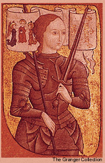

|
|
|
|
 Joan of Arc died just as she had lived--courageously, inspiring awe in those who came to mock her.Joan was born during the Hundred Years' War, a series of wars between England and France that shattered the peace from 1337 to 1453. Joan grew up on her family's farm under the influence of a devoutly religious mother. In her adolescence, she began to hear the voices of Saints Catherine and Margaret, two revered virgin martyrs, and of Saint Michael the Archangel. These voices, she claimed, directed her to do what no woman had done--to lead an army and drive the English from French soil. Military command
In 1429, the tide of the Hundred Years' War had turned against France. England seemed certain to complete its conquest. Joan, then 17 years old, convinced French nobles that her visions and voices had come from God, and they gave her command of French troops. Joan's militant fervor inspired a French army to defeat the English forces at Orléans. Then she led the French crown prince, Charles, deep into enemy territory to Reims to be crowned and anointed true king of France. Joan's feats seemed to many people to be miraculous judgments of God against the English cause.
Capture and trial
Joan continued her military campaign against the English until she was captured in May 1430. Suddenly, everything turned against her. Even Charles, the man she helped make king, made no effort to ransom her. And the outcome of her trial, which took place in enemy territory with enemy judges, seemed a foregone conclusion. | |